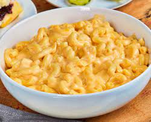

Mac and Cheese

Description
We are gonna make a delicious mac and cheese using my favorite cheese, smoked cheddar. The smoked cheddar will be balanced using plain sharp cheddar.
The spicy chilpote seasoned bread crumbs adds nice kick against the creaminess of the cheese and pasta.
Ingredients
Mac and Cheese
- 1 pound of elbow macaroni
- 2T butter
- 2T flour
- 2 cups half and half
- 1/2 cup cream
- 8 oz smoked cheddar grated
- 2 oz sharp cheddar grated
Chipolte Seasoned Breadcrumbs
- 1/2 cup panko breadcrumbs
- 1t chipolte chili powder
- 1t Canola oil
Steps
- Boil Pasta according to directions for al dente
- Melt butter in 3 quart sauce pan
- Add flour to melted butter and reduce temp to low
- Cook for 5-8 minutes until the raw flour smell is gone
- Slowly whisk the half and half into the roux
- Slowly whisk the cream into mixture
- Bring cream to low boil
- Incrementally add cheese and melt completly before adding more
- Add pasta and place in small casserole
- Top with seasoned breadcrumbs and bake at 450 for 5 minutes